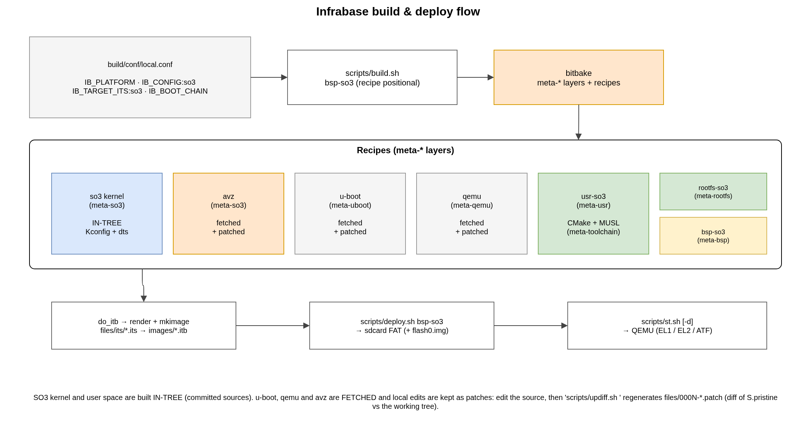

1. Build System
SO3 is built with Infrabase, a thin orchestration layer on top of
bitbake. A set of meta-layers
(build/meta*) provides the recipes; a single configuration file
(build/conf/local.conf) selects what to build; and a handful of wrapper
scripts in scripts/ drive the whole thing — building the kernel, the user
space, U-Boot, the root filesystem and the FIT image, then packaging them onto a
virtual SD-card.
{kind=link}

Fig. 1.1 From local.conf through the meta-layer recipes to a bootable image.
The SO3 kernel and user space are built in tree (directly from the
committed so3/ sources). The other components — U-Boot, QEMU, the
AVZ hypervisor and (optionally) ARM-TF/OP-TEE — are fetched from
upstream and local changes are kept as patches (see
fetched components).
1.1. Prerequisites
Infrabase drives bitbake, so the host needs the usual Yocto/bitbake build
dependencies plus the SO3 image tooling (device-tree-compiler,
u-boot-tools, mtools, dosfstools, rsync, parted, the QEMU
build dependencies, …) and a few cross-toolchains that are not built by the
layers. The canonical, continuously-tested list is the base container recipe
docker/Dockerfile.toolchains — mirror it when setting up a bare host.
For development, the same environment is available as a ready-made build
container: scripts/dbuild.sh --build then scripts/dbuild.sh build.sh
bsp-so3 (or bare dbuild.sh for a shell) runs any front-end script
inside it, with the repository bind-mounted at its own path and the container
running as the calling user — see docker/README.md.
The cross-toolchains that must be on PATH:
Used for |
Toolchain (prefix) |
Selected by |
|---|---|---|
Kernel (and AVZ), bare-metal |
|
|
U-Boot, GNU/Linux |
|
|
User space, MUSL |
|
built automatically by |
Note
The MUSL user-space toolchains are produced into the bitbake work tree by the
meta-toolchain layer; there is no manual step for them. Only the bare-metal
(kernel/AVZ) and GNU/Linux (U-Boot) toolchains must be installed on the host.
To avoid installing anything on the host, build inside the container instead — see Running with Docker.
1.2. Getting started
Everything is anchored on the repository root. Source env.sh once per shell:
source env.sh
This exports IB_ROOT_DIR, sets BBPATH/BUILDDIR to build/, and
prepends scripts/ and the bundled bitbake to PATH so the active tree
wins. From then on the build.sh / deploy.sh / st.sh commands are on
the path. See User Guide for the end-to-end walkthrough.
1.3. Meta-layers
Layer |
Provides |
|---|---|
|
base bitbake classes — notably |
|
the SO3 kernel recipe ( |
|
the user space ( |
|
board support: |
|
the U-Boot bootloader (fetched + patched). |
|
the patched QEMU emulator (the |
|
the Linux kernel recipe (fetched from kernel.org + patched), plus the
opt-in |
|
builds the root filesystem image ( |
|
builds the MUSL cross-toolchains used by the user space. |
|
ARM Trusted Firmware and OP-TEE (only for the secure boot chains). |
|
creates and populates the SD-card image (privileged |
build/conf/bblayers.conf is regenerated automatically from this fixed list;
do not edit it by hand.
1.4. Configuration — build/conf/local.conf
A few IB_* variables select the target and the deployment mode:
Variable |
Meaning |
|---|---|
|
target platform: |
|
the SO3 kernel |
|
the FIT image to assemble — this is what selects the deployment mode. |
|
the firmware chain: |
|
ARM-TF / OP-TEE platform identifiers and build options (secure chains only). |
The same virt64 kernel can be deployed three ways purely by choosing the ITS,
without a per-platform IB_PLATFORM:so3 override:
|
Deployment |
|---|---|
|
SO3 standalone (kernel at EL1) |
|
SO3 as a plain AVZ guest (AVZ at EL2, |
|
an SO3 capsule (see SO3 Capsules (SOO framework)) |
IB_BOOT_CHAIN is a weak assignment so a capsule deployment can override it.
For the QEMU virt machine, ""/uboot boots a bare U-Boot, atf+uboot
boots through ARM-TF (EL3 → EL2), and full additionally loads OP-TEE.
Note
Those three ITS targets build SO3 only. The same tree can also build
Linux as the capsule agency: enable the soo override
(EXTRA_OVERRIDES .= ":soo") and pick a SOO Linux config
(IB_CONFIG:linux:<plat> = "virt64_soo_defconfig"). The meta-linux
soo layer then fetches and patches Linux into the agency, and the
bsp-capsules recipe deploys it beside the capsules — see SO3 Capsules (SOO framework).
1.5. The build & deploy scripts
build.sh runs bitbake to build artefacts:
Option |
Action |
|---|---|
|
build a recipe and its dependency tree. A BSP name ( |
|
clean the recipe first, then rebuild. |
|
list all recipes / verbose bitbake output. |
deploy.sh then writes the boot media (and opens the sudo -n
session the privileged tasks need): deploy.sh <recipe> (-x optional)
deploys it — a BSP writes the whole image (rootfs → p2 + FIT/ITB → p1), a
component (e.g. usr-so3) deploys just its part. -l / -v list /
verbose. Deploy does not recompile: it consumes what build.sh already
produced (rootfs.cpio, the FIT), so the workflow is edit → build.sh →
deploy.sh. A deploy with no prior build fails clearly rather than silently
rebuilding.
Important
build.sh bsp-so3 compiles the BSP but does not create the SD-card
image itself: the empty filesystem/sdcard.img.<platform> is produced by the
separate, privileged filesystem recipe (losetup/mkfs/parted).
deploy.sh populates and writes that image but does not create it, so a
deploy against a fresh tree fails until the image exists. The canonical
first-build sequence is therefore three steps:
build.sh bsp-so3 # compile kernel + user space + U-Boot + rootfs + FIT
build.sh -x filesystem # create + format the SD-card image (privileged, once)
deploy.sh bsp-so3 # populate the rootfs and write the boot media
Once the image exists, later edits only need build.sh -x <recipe> +
deploy.sh bsp-so3 — the filesystem step is a one-off.
Note
build.sh / deploy.sh take the recipe as a positional argument
(-x is accepted but optional); -l lists every recipe. A BSP name
builds/deploys the whole BSP, a component name just that recipe — the former
-a / -k / -b / -r / -f flags are gone.
Important
The SO3 kernel is built in tree, and bitbake does not track the in-tree
so3/so3/so3.bin as a task output. After rebuilding the kernel
(build.sh -x so3), run deploy.sh bsp-so3 to regenerate the FIT
image and refresh the SD-card — otherwise you boot the previous kernel.
1.6. The SO3 kernel recipe
so3_<version>.bb configures and builds the kernel straight from so3/so3;
the mechanics below are the still-familiar Kbuild ones.
1.6.1. Configuration (Kconfig)
Each subsystem carries a Kconfig; every option becomes a CONFIG_* symbol
stored in so3/so3/.config and exposed as
include/generated/autoconf.h. IB_CONFIG:so3:<plat> names the
defconfig (so3/so3/configs/) the recipe loads. The target architecture
(CONFIG_VIRT64/CONFIG_RPI4_64/CONFIG_VIRT32…) and the mode
(CONFIG_AVZ, CONFIG_SOO) are driven from .config; menuconfig is
available for interactive tweaks. The recipe records the last-built architecture
in a .ib_last_arch marker and runs make distclean on an arch switch.
1.6.2. Linker script and asm-offsets
The kernel is linked with an architecture-specific script
(arch/arm64/so3.lds) that places the exception vectors, .head.text, the
code/data/bss, the per-CPU area, the system page tables, the driver initcall
sections, the heap and the per-CPU stacks. Sizes come from CONFIG_* symbols
passed with --defsym; the base address is CONFIG_KERNEL_VADDR. Assembly
needs the byte offsets of C structures — arch/arm64/asm-offsets.c produces a
header of #define OFFSET_* values shared by C and assembly, exactly as Linux
does.
1.6.3. Device trees
Hardware is described by device trees in so3/so3/dts/. The .dts
sources are compiled to .dtb blobs and shipped to the kernel inside the FIT
image; the kernel parses the blob at boot to discover RAM and devices
(Kernel Internals). The QEMU virt nodes for the framebuffer and input devices
live here too (Display & Input (QEMU virt)).
1.7. FIT image, ITS and boot media
SO3 is started by U-Boot, which loads one or more FIT images (.itb)
— each a single file bundling a payload, its device tree and, for the OS images,
a root filesystem. The .its templates live in the BSP layer
(meta-bsp/recipes-bsp/so3/files/its/ for SO3,
meta-bsp/recipes-bsp/linux/files/its/ for the Linux agency) and reference the
component trees through ${IB_*_PATH} placeholders. The do_itb task
renders each template into the gitignored output dir <ctx>/images/
(so3/images/ or linux/images/) — expanding ${IB_SO3_PATH},
${IB_AVZ_PATH}, ${IB_LINUX_PATH} and ${IB_ROOTFS_PATH} to absolute
paths — then assembles the .itb there with mkimage (there is no committed
target/ tree):
|
Contents |
|---|---|
|
standalone: SO3 kernel + DTB + ramfs |
|
AVZ ITB: the AVZ hypervisor binary + its device tree only — the
guest lives in a separate ITB (see Two-ITB AVZ boot). One per
platform: |
|
SO3 guest ITB: guest SO3 kernel + DTB + ramfs, loaded by AVZ. |
|
Linux agency guest ITB: Linux kernel + guest DTB + initrd, loaded by
AVZ ( |
|
a capsule image ( |
|
the 32-bit / RPi4 / Verdin standalone variants |
|
the LVGL-benchmark image driven by the |
do_deploy_boot writes the resulting .itb from <ctx>/images/ into the
FAT (boot) partition of
filesystem/sdcard.img.<platform>. For the ARM-TF chains (atf+uboot /
full), __do_platform_boot_chain (meta-bsp/.../bsp_virt64.inc) also
builds filesystem/flash0.img — BL1 at offset 0 plus a FIP (fiptool)
bundling BL2/BL31/U-Boot (and OP-TEE for full) at 256 KiB — which
QEMU loads as pflash.
1.7.1. Two-ITB AVZ boot
When a guest runs on AVZ, the hypervisor and its guest are packaged as two
separate FIT images rather than one: the AVZ ITB (<plat>_avz.itb — the
hypervisor binary + avz_dt only) and a guest ITB. The guest is either an
SO3 guest (<plat>_so3_guest.itb — SO3 kernel + DTB + ramfs, from
bsp-so3) or the Linux agency (<plat>_linux_guest.itb — Linux kernel +
guest DTB + initrd, from bsp-linux with IB_BOOT_CHAIN = "full").
The trigger throughout is the selected ITS ending in _avz. do_itb then
also builds the guest ITB, whose name is derived from the AVZ ITS by replacing
the _avz suffix with ${IB_GUEST_SUFFIX} — _so3_guest by default
(bsp-so3), _linux_guest for the Linux agency (bsp-linux). So
virt64_avz → virt64_so3_guest or virt64_linux_guest. (Deriving from
IB_TARGET_ITS rather than IB_PLATFORM keeps the underscore naming on
platforms whose IB_PLATFORM carries a hyphen, e.g. verdin-imx8mp.)
At deploy time the platform glue stages both images plus a per-platform
uEnv_<plat>_avz.txt (or, on verdin, a boot_avz.scr boot script). U-Boot
loads both ITBs to staging addresses and jumps through its guest-boot command,
which enters AVZ with the AVZ FIT in x0 and the guest ITB in x1;
AVZ’s loadAgency() then loads the guest from x1 (see AVZ Hypervisor).
When the selected ITS is not an _avz one (a bare standalone SO3/Linux
image), the deploy falls back to the single-ITB bootm path.
Note
The virt64 (QEMU) and rpi4_64 (hardware) two-ITB boots are
runtime-verified — on the Raspberry Pi 4 with both a Linux agency guest
and a plain SO3 guest, as well as the full SOO capsule configuration.
The verdin_imx8mp ITS split + guest-boot wiring is in place but
still to be validated on hardware.
1.8. Working with fetched components (updiff)
U-Boot, QEMU and AVZ are fetched from upstream into the repository root
(u-boot/, qemu/, avz/ — git-ignored) and patched. Local changes are
kept as a numbered patch series, regenerated with updiff rather than edited by
hand:
Edit the working tree directly (e.g.
qemu/hw/arm/virt.c).Build to test (
build.sh -x qemu).Regenerate the patches:
updiff.sh qemu.
updiff (patch.bbclass) diffs the pristine upstream snapshot
(${S}.pristine, taken right after fetch) against the working tree and writes
one git-style patch per changed file into
build/meta-<c>/recipes-<c>/<c>/files/000N-*.patch, consolidating in place and
regenerating the …-patches.inc manifest. Generated trees are excluded via the
per-recipe IB_UPDIFF_EXCLUDE variable (for QEMU: build subprojects
GNUmakefile, which keeps the meson/ninja output and the fetched subprojects out
of the patchset).
Note
The SO3 kernel and user space are versioned in the repository, so they carry no patch series — you simply edit and rebuild them.
1.9. User space and toolchains
The user-space applications are built with CMake against the MUSL C
library. The MUSL cross-toolchains (aarch64-linux-musl /
arm-linux-musleabihf) are produced by meta-toolchain into the bitbake work
tree — there is no manual toolchain step. See User Space.